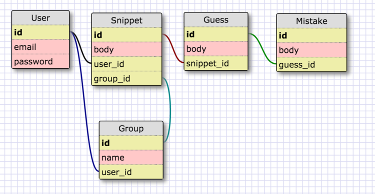

Using the Rails Skeleton I configured for Devise, Simple Forms, Bootstrap, and Heroku, I'm going build a new app. This app is called Syntax Driller and it is a very simple app that let's you plug in code and see if you can memorize it.
My app will have 5 models:
- User: which we already have as part of our template
- Snippet: which will hold the code snippets we want to memorize
- Guess: which will hold the user input
- Mistakes: to track the mistakes we made
- Group: to organize our different snippets, say by language
Following is a schema for my app:

I'm going to use the Rails g scaffold command to get this show on the road. I'll remove unnecessary files later on. Following are the commands for each of the resources above (except for User, which was already in my skeleton).
rails g scaffold Snippet body:text user:referencesrails g scaffold Guess body:text snippet:referencesrails g scaffold Mistake body:text guess:referencesrails g scaffold Group name:string user:references
You'll see a whole mess of files in your app now for the models, views, tests and migrations for our resources. Speaking of migrations, our next step is to run them with the following command:
bin/rake db:migrate
We'll also want to create the Bootstrap themes for each of these as well.
Run your rails server rails s to checkout the views for your recsources. We'll make them pretty later, but for right now, let's get this puppy crudding. First step is to open the console and start creating some records. Type rails c to open your console.
Let's see if we can create a snippet tied to a user with the following:
I have a couple of user records already from my template. Here I'll assign the first record to the variable "ali":
ali = User.find(1)Then I'll create a snippet tied to user "ali"ali.snippets.create(body: "I am the first snippet"I get an error message:NoMethodError: undefined method `snippets' for #<User:0x007fbcc0843030>because I forgot to include the appropriate associations in my existing user model.
Let's add the following associations to our User model:
has_many :snippets, dependent: :destroyhas_many :groups, dependent: :destroy- The line
dependent: :destroyensures that when a user record is destroyed, all of their snippets and groups will be destroyed as well.
Now when you create a snippet for user "ali" it should work.
That's a pretty good start to our app. I'm going to change our root route from the placeholder of root 'users#index' to root 'snippets#index'.
There is a lot left to do to get this app crudding and next we'll tackle associating our current user with the snippets online.